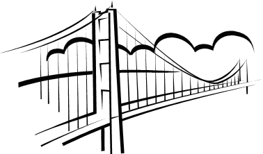

Against the city's gleaming spires,
Above the ships that ply the stream,
A bridge of haunting beauty stands -
Fulfillment of an artist's dream
(D. B. Steinman)
Algorithm city is crossed by the beautiful Complexity River. Up until now, the only possible way to travel from one bank (margin) of the river to the other is by boat. This is very negative for the city economics and therefore the mayor has decided to build a series of bridges to connect the two parts of the city, lying on different banks of the river.
He has a fixed number of bridges to build, but in order to save the maximum amount of money he wishes to build the bridges has short as possible. However, since he wants to really help the citizens, the bridges must not be to close together, in order to have them splitted all over the city.
The mayor has asked for your help, and has given you the map of the part of city with that is near the river. To simplify, this map can be seen as a grid of chars. '#' means a piece of terrain and '.' means water. So, for example, a map could be something like:
#################### ..######........##.. ....##.............. .................... .................... .................#.. ..######........##.. ####################
Figure 1 - An example of a valid map
You can be sure that the map will always have terrain-only on the first and last rows, and that those pieces of terrain correspond to different banks. There will be no islands in the river, and all terrain will either be connected to the north or south bank. We consider a piece of terrain to be connected to another if they are adjacent, that is, if they are next to each other horizontally or vertically (but not diagonally). You can also be sure that on the same column of the grid map, there will never be a south piece of the bank above a north one. However, small lakes (that do not belong to the river) can exist inside banks, as exemplified in figure 2.
############### .#..#.......#.. .####......##.. .####.......... .#........##... ..........#.... ###############
Figure 2 - Another example of a valid map
The Algorithm City mayor is very old fashioned and has decided that the bridges to build must only be built in the north-south direction (vertically, in the grid). So, for example, imagine that the mayor would like to build 3 bridges, that must be separated at least by 4 positions, on the map of the figure 1. A solution that would minimize the length of the bridges would be the one in figure 3, where 'B' represents a bridge.
#################### ..######........##.. ..B.##.B.........B.. ..B....B.........B.. ..B....B.........B.. ..B....B.........#.. ..######........##.. ####################
Figure 3 - A solution for the map of figure 1
Note that the first two bridges in the solution are exactly separated by 4 spaces as required, and could not be more close. If we measure the length of the bridges built by squares in the grid, we can say that the total length used was 11 (4+4+3). Any other way of building the bridges in this map would give more total length and therefore would be worse.
Given a grid map as specified above, a number of bridges to build and the minimum space (on columns) that should separate the bridges, your task is to calculate the best positions to build the bridges in order to minimize their total length, and print the total length of the bridges in that best arrangement.
The first line of input contains two integers, R and C, representing respectively the numbers of rows and the number of columns of the grid map (5 ≤ R,C ≤ 1000).
Then comes a line with two integers, B and S, where B represents the number of bridges to build (1 ≤ B &le 100) and S the minimum space (in columns) that should separate bridges.
After that come exactly R lines, each one with C chars, that represent the map. This map obeys to the rules described above and only has '#' or '.'.
For each test case, the output should contain a single line, with an integer representing the total length of bridges to build in the solution that minimizes this same total, as described above.
There will always be a way to build the bridges.
8 20 3 4 #################### ..######........##.. ....##.............. .................... .................... .................#.. ..######........##.. #################### 7 15 2 8 ############### .#..#.......#.. .####......##.. .####.......... .#........##... ..........#.... ###############
11 2
2006 Programming Contest of Porto University
Round 3, 11th of October of 2006
(Author: Pedro Ribeiro - DCC/FCUP)